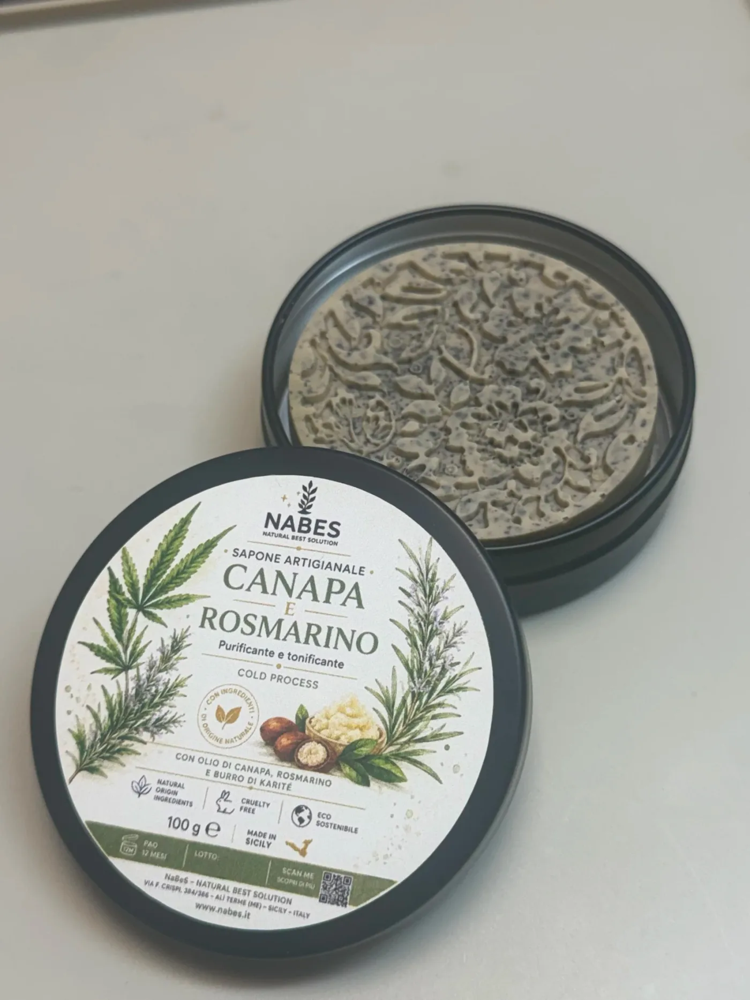

Saponi · NAB018
Canapa e Rosmarino
Sapone artigianale · cold process
Sapone artigianale naturale realizzato con saponificazione a freddo, un metodo tradizionale che preserva le proprietà degli oli vegetali e degli estratti botanici.
Ispirato alla tradizione mediterranea, unisce olio di canapa, rosmarino e alloro a una base ricca di oli vegetali biologici, per una detersione delicata che nutre, purifica e rivitalizza la pelle.
La profumazione fresca ed erbacea, arricchita da note agrumate di lemongrass, trasforma il gesto quotidiano della detersione in un rituale energizzante e rigenerante.
La formula
- Olio di Canapa
- nutriente, emolliente e riequilibrante
- Rosmarino
- tonificante, purificante e rinfrescante
- Alloro
- purificante e aromatico
- Olio di Oliva
- addolcente e protettivo
- Olio di Cocco
- detergente naturale e nutriente
- Burro di Cacao
- emolliente ed elasticizzante
- Tea Tree Oil
- purificante naturale
- Lemongrass
- rinfrescante e rivitalizzante
- Avena e Canapa in polvere
- riequilibranti e delicatamente esfolianti
- Funzione cosmetica
- —
- Detersione delicata quotidiana
- —
- Aiuta a mantenere la pelle morbida ed elastica
- —
- Contribuisce a una sensazione di pelle pulita e fresca
- —
- Supporta il naturale equilibrio cutaneo
- —
- (claim conformi Reg. UE 655/2013)
- —
INCI completo
Rosmarinus Officinalis Leaf Oil, Olea Europaea (Olive) Fruit Oil, Linum Usitatissimum (Linseed) Seed Oil, Helianthus Annuus (Sunflower) Seed Oil, Theobroma Cacao Seed Butter, Cannabis Sativa Seed Oil, Cocos Nucifera (Coconut) Oil, Passiflora Edulis Fruit Extract, Aqua, Sodium Hydroxide, Citric Acid, Avena Sativa Powder, Cannabis Sativa Powder, Rosmarinus Officinalis Powder, Laurus Nobilis Leaf Extract, Melaleuca Alternifolia Leaf Oil, Cymbopogon Citratus Oil, Linalool, Limonene.
Descrizione prodotto
Sapone artigianale naturale realizzato con saponificazione a freddo, un metodo tradizionale che preserva le proprietà degli oli vegetali e degli estratti botanici.
Ispirato alla tradizione mediterranea, unisce olio di canapa, rosmarino e alloro a una base ricca di oli vegetali biologici, per una detersione delicata che nutre, purifica e rivitalizza la pelle.
La profumazione fresca ed erbacea, arricchita da note agrumate di lemongrass, trasforma il gesto quotidiano della detersione in un rituale energizzante e rigenerante.
Benefici principali
- Deterge delicatamente rispettando l’equilibrio cutaneo
- Aiuta a mantenere la pelle morbida ed elastica
- Azione purificante e riequilibrante naturale
- Dona una piacevole sensazione di freschezza
- Ideale per la detersione quotidiana
- Profumazione mediterranea, fresca ed erbacea
Tipo di pelle
- Indicato per:
- Tutti i tipi di pelle
- Pelle mista o impura
- Adatto all’uso quotidiano su viso, mani e corpo.
Modo d’uso
Inumidire il sapone e massaggiare delicatamente sulla pelle bagnata fino a ottenere una schiuma ricca.
- Massaggiare con movimenti circolari, concentrandosi sulle zone più affaticate.
- Lasciare agire per qualche istante e risciacquare con acqua tiepida.
- Ideale al mattino per un effetto energizzante e rivitalizzante.
Caratteristiche del prodotto
- Sapone solido artigianale
- Formula 100% vegetale
- Ingredienti da agricoltura biologica
- Senza coloranti artificiali
- Profumazione naturale fresca ed erbacea
- Prodotto sostenibile ed eco-friendly
Avvertenze
- Uso esterno
- Effettuare un patch test prima dell’uso in caso di pelle sensibile
- Evitare il contatto con occhi e mucose
- In caso di pelle molto secca, utilizzare a giorni alterni
- Non utilizzare su cute lesa o con eczemi in fase acuta
Conservazione
Contiene allergeni del profumo naturalmente presenti, indicati in etichetta secondo la normativa cosmetica europea:
Rosmarinus Officinalis Leaf Oil, Olea Europaea (Olive) Fruit Oil, Linum Usitatissimum (Linseed) Seed Oil, Helianthus Annuus (Sunflower) Seed Oil, Theobroma Cacao Seed Butter, Cannabis Sativa Seed Oil, Cocos Nucifera (Coconut) Oil, Passiflora Edulis Fruit Extract, Aqua, Sodium Hydroxide, Citric Acid, Avena Sativa Powder, Cannabis Sativa Powder, Rosmarinus Officinalis Powder, Laurus Nobilis Leaf Extract, Melaleuca Alternifolia Leaf Oil, Cymbopogon Citratus Oil, Linalool, Limonene.
- Conservare in luogo fresco e asciutto, su un portasapone che permetta il drenaggio dell’acqua.
- Allergeni
- Linalool, Limonene.
- Ingredienti (INCI)
Profumazione
- Fresca ed erbacea, con note aromatiche mediterranee e accenti agrumati.
Informazioni prodotto
- Tipo: Sapone solido artigianale
- Metodo di produzione: Saponificazione a freddo
- Formato: Vasetto in latta
- Peso: 100 g
- PAO: 12 mesi
- Produzione: Artigianale – Made in Italy
Continua